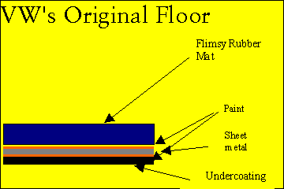
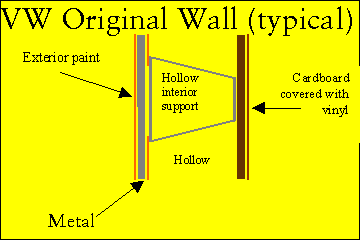

Interior Out, Noise Proofing

Initial Conditions
Okay, in the first section, we isolated most of the motor noise, and eliminated all the body "voids" as a place for rust and noise to hide. We talked about Agents Scully and Muldore. We trapped the infrared heat and clatter of the motor with NASA insulation, and we wrapped the exhaust system with insulating fiberglass webbing to boost HP, lower head temps, and increase heat for our interior.
Prepare to be amazed at VW's lack of soundproofing/thermal insulation in the rest of the body.
Currently loading below: pictures of the interior of the bus with all the panels out�see any insulation or rustproofing? To think that this bare sheet metal was simply topped with a cardboard/vinyl overlay; this actually enhanced the resonance of the cabin interior. Ugh.
What is amazing is the lack of rust in this vehicle. We were very lucky in this. VW put a lot of faith in their paint alone to defy rust. It worked on this California/Texas/Oklahoma van. Those vans who grew up in Vermont/Iowa/Michigan were not so lucky, and now many are artificial reefs and backyard storage sheds.
No wonder it sounds like a trash can; it is built like one; bare, rattley sheet metal all the way around. The only noise proofing is the felt tape on the wheel arches, and plastic/felt crap on the air intake housing (rear of cargo area). You will see a much different picture when we are done. (The black square in the middle of the lower photo (above) is the first step in our noise proofing, Q-Pads, more on that in a minute).

Important Concepts
Recall these graphics from the index page:

Now take a minute to study what we will apply here:

For the sake of drawing, it would appear that our floors and walls are now 6" thick. Not the case. In fact, those of you who have seen this bus (at Buggout, etc.) can testify, you cannot see tell tale signs of this insulation, only a nicely upholstered interior. The clue comes you slam a door, and hear the solid, "thunk", or ride down the highway, and talk in conversational tones at 70 mph.

How did you do it?
We started with Q-pads from Evercoat.
(Graphics and link shamelessly absconded with from Evercoat website)
What you see in the photo below is a self-adhesive, 3-millimeter-thick tile made of asphalt/rubber emulsion, sold under the name Q-Pads, by Evercoat. These absolutely deaden vibration/resonance in metal. Similar products are used by all automotive manufactures. The more luxurious the car (like a Lincoln or Rolls) the more of these pads will cover exposed, interior sheet metal.
You heat them gently (in the oven at about 38 C, or 100 F) and they conform to the ripples and chinks in the body, and stick permanently. We put them EVERYWHERE. Inside the front doors, on the floor, in the sliding door, everywhere. They are permanent, bonding edge to edge to the sheet metal; impossible to remove, once placed. I recently tried to remove a small section of Q-Pad to install the rear seat (for selling the van); it took me an hour with a putty knife and some choice swearing to make two wee holes. Tough stuff. During installation (while they are warm) is the time to cut any holes, etc.This Q-Pad is installed on the wheel arch under the driver's seat. It is that thick black tile stuck to the sheet metal. (Yes, that is my actual hand, not a stuntman or body double's�) We covered this area with NASA Insulation, and duct taped the edges. We did not order the replacement rubber mat to cover all this, although that was the plan.
We covered the floor, front and rear wheel arches, and walls with Q-Pads. The inclined area between the rear wheel arches got two layers, as that area appeared to be the most offending for resonance from the motor/transmission.
You can find Q-Pads at Auto Body Supply houses. We found ours at "Mattos Paint and (other stuff)" in Alexandria, VA (you'll have to "Find" Mattos on that web page). Unfortunately, they do not give this product away, though I did ask.
They said "No, they are about $40 for a box of four tiles, so pay up or scram." The thinner tiles, used for the walls, (about 1.5 mil. thick) come six to a box, and are about $25 a box. Either way, this was among the greatest outlays for a single product in our project. I think we used eight or ten boxes. Critical though, and worth every cent.

That can't be all. Take me to Interior section #2

Engine Out, Then Back In | Heater Design, Install | Home

Could our business help yours? Find out how, here: http://www.bulley-hewlett.com/
Write us at: mailto:gmbulley@bulley-hewlett.com